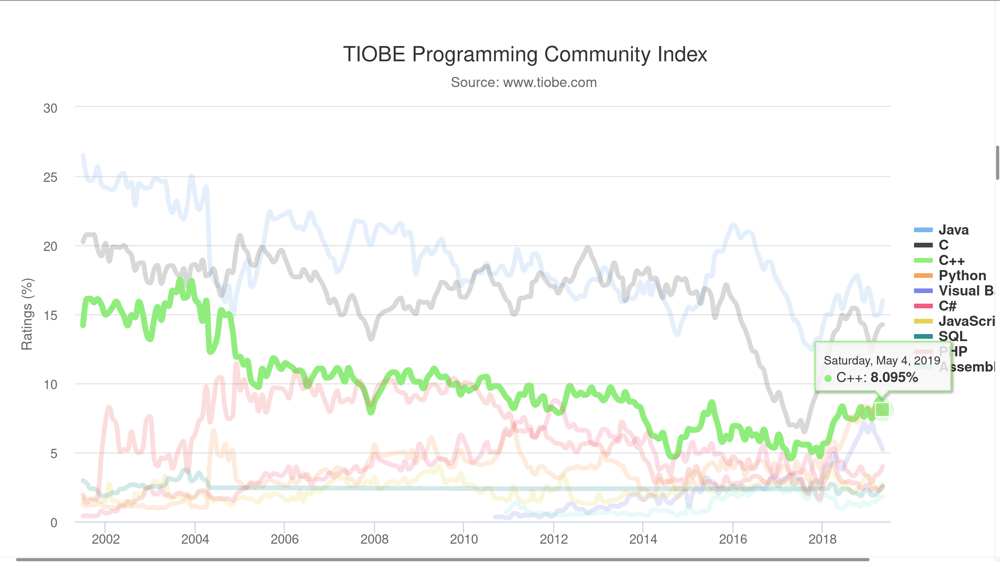
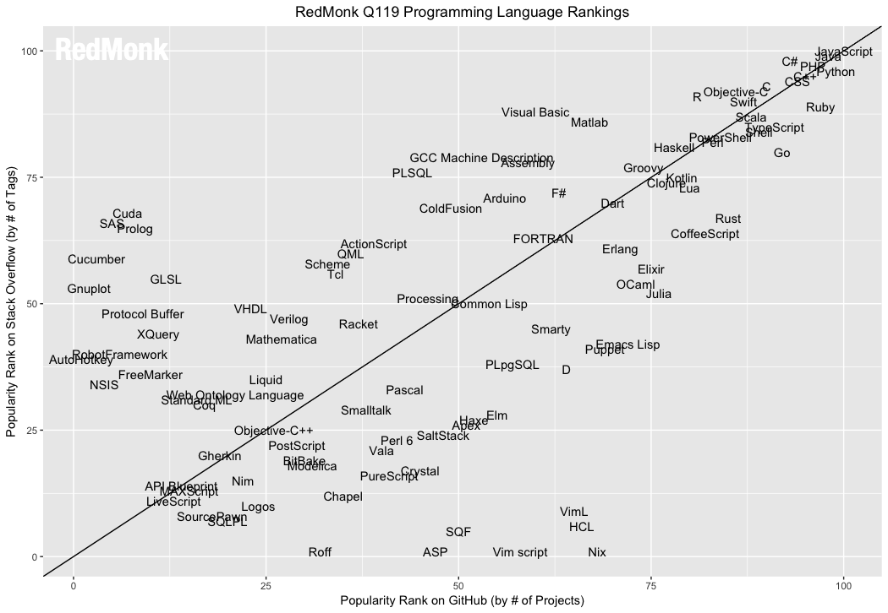
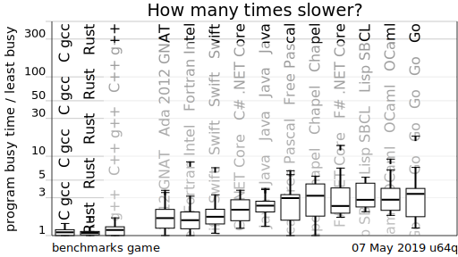
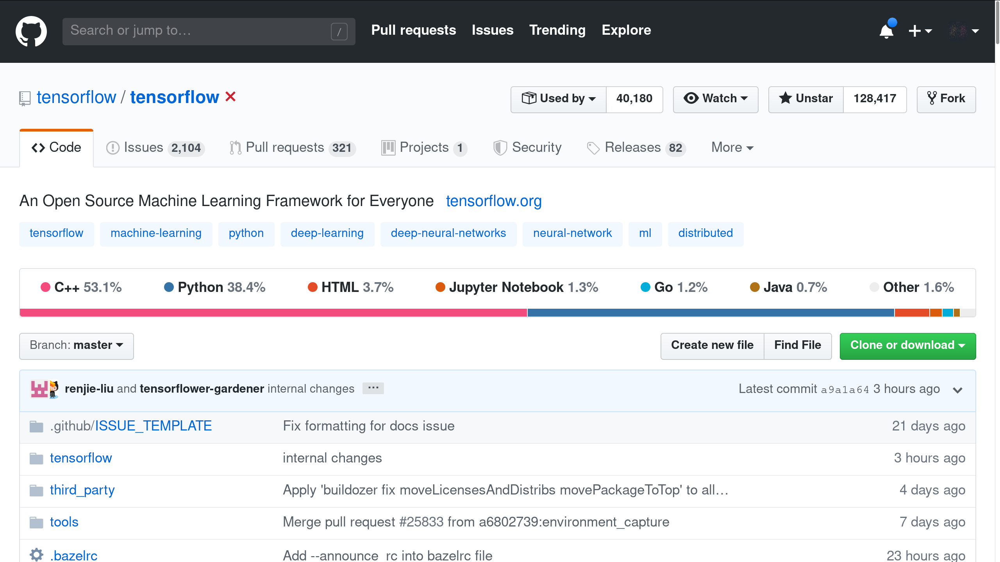
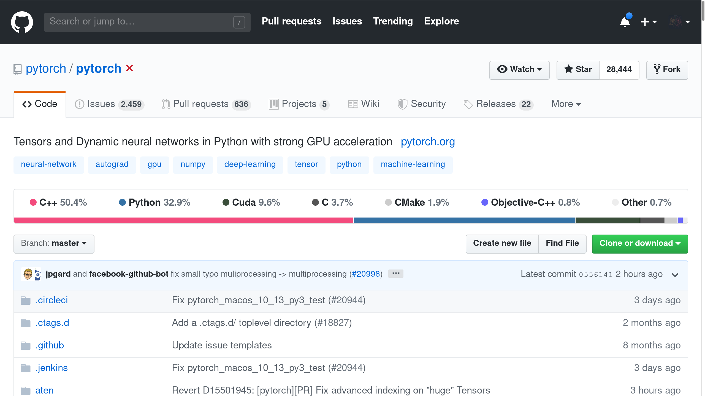
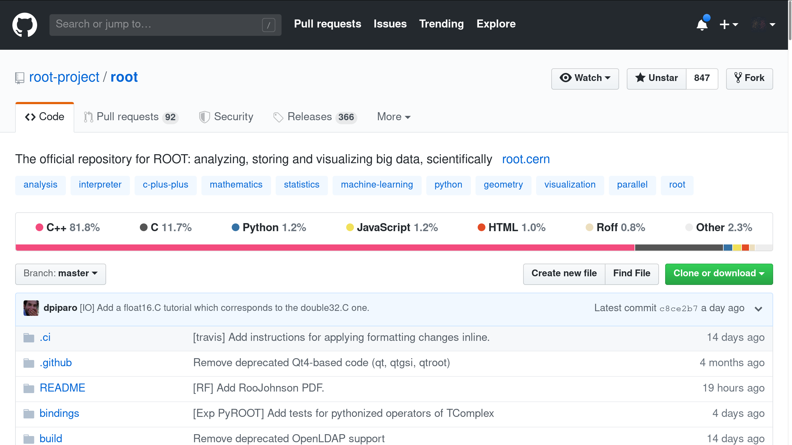

layout: true <div class="my-header"> <p class="align_left"><img src="images/yonsei_logo.png" style="height: 30px;"/></p> <p class="align_right"><b>C++ Lecture - 1. Intro & Pointer</b></p> </div> <div class="my-footer"> <p class="align_right"><b>2019.05.31 Yonsei HEP-COSMO</b></p> <p class="align_left"><b>Tae Geun Kim</b></p> </div> --- class: center, middle # C++ Lecture ## 1. Intro & Pointer <h3 style="color: darkblue">Tae Geun Kim</h3> --- ## Table of Contents -- * Intro -- * What is C++? -- * Basic C++ --- class: center, middle # Intro --- ### TIOBE Index  --- ### Redmonk  --- ### Computer Benchmark Game  --- ### Popular project #### 1. Tensorflow  --- ### Popular project #### 2. PyTorch  --- ### Popular project #### 3. ROOT  --- class: center, middle # What is C++? --- ### Multiparadigm Language -- * C -- * Object-Oriented Programming -- * Template -- * STL (Now, C++ Standard Library) --- ### C++ contains C **C Code** ```C #include <stdio.h> int main() { printf("Hello, world!"); return 0; } ``` -- **C++ Code** ```C++ #include <stdio.h> int main() { printf("Hello, world!"); return 0; } ``` --- ### Object-Oriented Programming ```C++ class Circle { private: double radius; public: Circle(double r=1.0) { radius = r; } double getRadius() { return radius; } double getArea() { return radius * radius * 3.14; } }; // Do not miss semi-colon ``` --- ### Template * For generic Programming ```C++ #include <iostream> template<typename T> T sum(T a, T b) { return a + b; } int main() { std::cout << sum(1, 2) << '\n'; std::cout << sum(1.0, 2.0) << std::endl; } ``` --- ### STL * For generic programming & convenience -- **ex) Vector** ```C++ #include <iostream> #include <vector> #include <algorithm> using namespace std; int main() { vector<int> v = {1,9,7,3,5}; // Sort sort(v.begin(), v.end()); // Reverse reverse(v.begin(), v.end()); // Sum cout << accumulate(v.begin(), v.end(), 0) << endl; } ``` --- class: center, middle # Basic C++ --- ### Our first program **C++ Code** ```C++ // hello.cpp #include <iostream> int main() { std::cout << "Hello,\n" << "World!" << std::endl; return 0; } ``` -- **Compile** ```sh $ g++ -o hello hello.cpp ``` -- **Run** ```sh $ ./hello ``` --- ### Basic types ```C++ #include <iostream> using namespace std; int main() { int i1 = 2; int i2, i3 = 5; float pi = 3.14159; double x = -1.5e6; char c1 = 'a', c2 = 35; bool cmp = i1 < pi, happy = true; long l = 1234567890; long long ll = 12345678987654321; long double ld = 0.12345678987654321l; unsigned int u1 = 10u; } ```